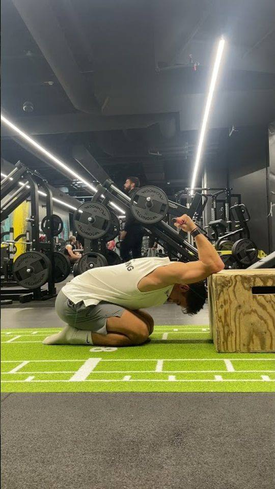

Ton bilan trouve
ta zone la plus faible.
Ton programme de
12 semaines
part de là.
1
Le bilan
Des tests guidés, zone par zone.
2
Ta zone la plus faible
L’algorithme part de là.
3
12 semaines
Chaque semaine monte d’un cran.
Mobility Club